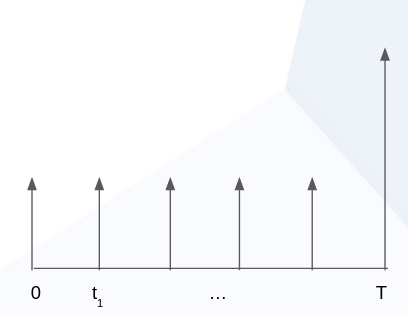

Contingent Claims
Introduction
Contingent Claims is a library for modeling financial instruments in Daml. An instrument is
represented by a tree of Claims, which describe future cashflows between two parties as well
as the conditions under which these cashflows occur.
ContingentClaims.Lifecycle offers lifecycling capabilities, as well as a valuation semantics
to map a claim to a mathematical expression that can be used for no-arbitrage pricing.
The implementation closely follows the model outlined in the papers [Cit1] and [Cit2].
An example of how to create and lifecycle contracts using Contingent Claims can be found in this tutorial.
In the following we present a user guide for getting started with Contingent Claims-based
modeling. It is meant to teach the basics of the framework, but does not cover every aspect. The
work is based on the papers [Cit1] and [Cit2], and we recommend that you refer to these for an
in-depth understanding of how it works.
The Model
The approach taken in the papers is to model financial instruments by their cashflows. This should be familiar to anyone having taken a course in corporate finance or valuation. Lets start with an example:
The picture above represents the cashflows of a fixed-rate bond. Or alternatively, you can think of it as a mortgage, from the point of view of the bank: there are interest payments at regular intervals (the small arrows), and a single repayment of the loan at maturity (the big arrow on the right). So how do we go about modelling this?
We use the following data type, slightly simplified from Claim:
data Claim a
= zero
| one a
| give (Claim a)
| and with lhs: Claim a, rhs: Claim a
| or with lhs: Claim a, rhs: Claim a
| scale with k: Date -> Decimal, claim: Claim a
| when with predicate: Date -> Bool, claim: Claim a
| anytime with predicate : Date -> Bool, claim: Claim a
| until with predicate : Date -> Bool, claim: Claim a
There are couple of things to consider.
First note that the constructors of this data type create a tree structure. The leaf constructors
are zero and one a, and the other constructors create branches (observe they call
Claim a recursively). The constructors are just functions, and can be combined to produce
complex cashflows. For example, to represent the above bond, we could write the following:
when (time == t_0) (scale (pure coupon) (one USD)) `and` ...
Lets look at the constructors used in the above expression in more detail:
one "USD"means that the acquirer of the contract receives one unit of the asset, parametrised bya, immediately. In this case we use a 3-letter ISO code to represent a currency. But you can use your own type to represent any asset.scale (pure coupon)modifies the magnitude of the arrow in the diagram. For example, in the diagram, the big arrow would have a distinct scale factor from the small arrows. In our example, the scale factor is constant:pure coupon = const coupon, however, its possible to have a scale factor that varies on an unobserved value, such as a stock price, the weather, or any other measurable quantity.when (time == t_0)tells us where along the x-axis the arrow is placed, i.e., it modifies the moment the claim is acquired. The convention is that this must be the first instant that the predicate (time == t_0in this case) is true. In our example it is a point, but again, we could have used an expression with an unknown quantity, for examplespotPrice > pure k, and it would trigger the first instant that the expression becomes true.andis used to chain multiple expressions together. Remember that in thedatadefinition above, each constructor is a function:and : Claim a -> Claim a -> Claim a. We use the Daml backtick syntax to writeandas an infix operator, for legibility.
Additionally we have several constructors which weve not used in this example:
zero, used to indicate an absence of obligations. While it may not make sense to create azeroclaim, it could, for example, result from applying a function on a tree of claims.givewould flip the direction of the arrows in our diagram. For example, in a swap we could usegiveto distinguishing the received/paid legs.oris used to give the bearer the right to choose between two different claims.anytimeis likewhen, except it allows the bearer to choose (vs. no choice) acquisition in a region (vs. a point).untilis used to adjust the expiration (horizon in [Cit1]) of a claim. Typically it is used withanytimeto limit aforesaid acquisition region.
The tree produced by our expression is pictured below:

Composition and Extensibility
Although we could model every subsequent arrow the way we did the first one, as good programmers we
wish to avoid repeating ourselves. Hence, we could write functions to re-use subexpressions of the
tree. But which parts should we factor out? It turns out that Finance 101 comes to the rescue
again. Fixed income practitioners will typically model a fixed-rate bond as a sum of zero-coupon
bonds. Thats how we model them in `Financial.daml <./daml/ContingentClaims/Financial.daml>`__.
Below are slightly simplified versions:
zcb maturity principal asset =
when (time == maturity) (scale (O.pure principal) (one asset))
Here weve just wrapped our expression from the previous section in a function zcb, that we can
reuse to build the fixed-rate bond:
fixed : Decimal -> Decimal -> a -> [Date] -> Claim a
fixed principal coupon asset [] = zero
fixed principal coupon asset [maturity] = zcb maturity coupon asset `and` zcb maturity principal asset
fixed principal coupon asset (t :: ts) = zcb t coupon asset `and` fixed principal coupon asset ts
We define the fixed rate bond by induction, iterating over a list of dates [t], and producing
multiple zero-coupon bonds zcb combined together with and:
- The first definition covers the trivial case where we pass an empty list of dates.
- The second definition handles the base case, at maturity: we create both a coupon (interest) payment, and the principal payment.
- The third definition is the induction step; it peels the first element off the list, and calls itself recursively on the tail of the list, until it reaches the base case at maturity.
This re-use of code is prevalent throughout the library. Its great as it mirrors how instruments are defined in the industry. Lets look at yet another example, a fixed vs floating USD/EUR swap.
type Ccy = Text
usdVsEur : [Date] -> Claim Ccy
usdVsEur = fixed 100.0 0.1 "USD" `swap` floating (spot "EURUSD" * pure 100.0) (spot "EURUSD") "EUR"
We define it in terms of its two legs, fixed and floating, which themselves are functions.
We use swap in infix form, and partially apply it - it takes a final [Date] argument which
we omit, hence the resulting signature [Date] -> Claim Ccy.
As you can see, not only is this approach highly composable, but it also mirrors the way derivative instruments are modelled in finance.
Another major advantage of this approach is its extensibility. Unlike a traditional approach, where
we might in an object-oriented language represent different instruments as classes, in the cashflow
approach, we do not need to enumerate possible asset classes/instruments a priori. This is
especially relevant in a distributed setting, where parties must execute the same code, i.e., have
the same *.dars on their ledger to interact. In other words, party A can issue a new
instrument, or even write a new combinator function that is in a private *.dar, while being able
to trade with party B, who has no knowledge of this new *.dar.
Concerning Type Parameters
The curious reader may have noticed that the signature we gave for data Claim is not quite what
is in the library, where we have data Claim t x a o. In our examples, we have specialised this
to type Claim' t x a o = Claim Date Decimal a a. Parametrising these variables allows us to
reason about Assets and Observations that appear inClaims as function-like
objects. The main use of this is to create claims with placeholders for actual parameters, that
can later be filled in by mapping over them (mapParams).
The Time Parameter
t is used to represent the first input argument to an Observation, and above we used
Date for this purpose. One reason this has been left parametrised is to be able to distinguish
different calendar and day count conventions at the type level. This is quite a technical topic, but
it suffices to know that for financial calculations, interest is not always accrued the same way,
nor is settlement possible every day, as this depends on local jurisdictions or market conventions.
Having different types makes this explicit at the instrument level.
Another use for this is expressing time as an ordinal values, representing e.g. days from issue.
Such a Claim can be used repeatedly to list at different dates, but with the same durations.
Think for example, of series of listed futures or options which are issued with quarterly/monthly
maturities - their duration is about the same, but they are issued on different dates.
The Asset Parameter
a, as we already explained, is the type used to represent assets in our program. Keeping this
generic means the library can be used with any asset representation. For example, you could use one
of the instrument implementations in Daml Finance, but are not forced to do so.
Lifecycling
So far weve learned how to model arbitrary financial instruments by representing them as trees of
cashflows. Weve seen that these trees can be constructed using the type constructors of
data Claim, and that they can be factored into more complex building blocks using function
composition. But now that we have these trees, what can we do with them?
The original paper [Cit1] focuses on using these trees for valuing the instruments they represent, i.e., finding the fair price that one should pay for these cashflows. Instead, well focus here on a different use-case: the lifecycling (aka safekeeping, processing corporate actions) of these instruments.
Lets go back to our fixed-rate bond example, above. We want to process the coupon payments. There
is a function in `Lifecycle.daml <./daml/ContingentClaims/Lifecycle.daml>`__ for doing just
this:
type C a = Claim Observation Date a a
data Result a = Result with
remaining : C a
pending : [(Decimal, a)]
lifecycle : (Eq a, CanAbort m)
=> (a -> Date -> m Decimal)
-> C a
-> Date -> m (Result a)
This may look daunting, but lets look at an example in `Test/FinancialContract.daml
<test/daml/Test/FinancialContract.daml>`__ to see this in action:
do t <- toDateUTC <$> getTime
let getSpotRate isin t = do
(_, Quote{close}) <- fetchByKey (isin, t, bearer)
pure close
lifecycleResult <- Lifecycle.lifecycle getSpotRate claims t
The first argument to lifecycle, getSpotRate, is a function taking an ISIN (security) code, and
todays date. All this does is fetch a contract from the ledger that is keyed by these two values,
and extract the closeing price of the security.
The last two arguments are simply the claims we wish to process, and todays date, evaluated using
getTime.
The return value, lifecycleResult, will contain both the remaining tree after lifecycling, and
any assets that need to be settled. In our running bond example, we would extract the coupon
from the first payment, and return it, along with the rest of the tree, after that branch has been
pruned (depicted greyed-out below):

You may wonder why weve separated the settlement procedure from the lifecycling function. The reason is that we cant assume that settlement will happen on-chain; if it does, that is great, as we can embed this call into a template choice, and lifecycle and settle atomically. However, in the case where settlement must happen off-chain, theres no way to to do this in one step. This design supports both choices.
Pricing (Experimental)
This is an experimental feature. Expect breaking changes.
The ContigentClaims.Valuation.Stochastic module can be used for valuation. There is a fapf
function which is used to derive a fundamental asset pricing formula for an arbitrary Claim
tree. The resulting AST is represented by Expr, but can be rendered as XML/MathML with the
provided MathML.presentation function, for display in a web browser. See the Test/Pricing
module for examples. Here is a sample rendering of a margrabe option:
<math display="block"><msub><mi>USD</mi><mi>t</mi></msub><mo></mo><mo></mo><mo></mo><mrow><mo fence="true">[</mo><mrow><mo fence="true">(</mo><msub><mo>I</mo><mrow><msub><mi>AMZN</mi><mi>T</mi></msub><mo>-</mo><msub><mi>APPL</mi><mi>T</mi></msub><mo></mo><mn>0.0</mn></mrow></msub><mo></mo><mrow><mo fence="true">(</mo><msub><mi>AMZN</mi><mi>T</mi></msub><mo>-</mo><msub><mi>APPL</mi><mi>T</mi></msub><mo fence="true">)</mo></mrow><mo>+</mo><msub><mo>I</mo><mrow><mn>0.0</mn><mo></mo><msub><mi>AMZN</mi><mi>T</mi></msub><mo>-</mo><msub><mi>APPL</mi><mi>T</mi></msub></mrow></msub><mo></mo><mn>0.0</mn><mo fence="true">)</mo></mrow><mo></mo><msup><mrow><msub><mi>USD</mi><mi>T</mi></msub></mrow><mrow><mo>-</mo><mn>1.0</mn></mrow></msup><mo>|</mo><msub><mo mathvariant="script">F</mo><mi>t</mi></msub><mo fence="true">]</mo></mrow></math>
You can cut-and-paste this into a web page in developer mode in any modern browser.
References
| [Cit1] | (1, 2, 3, 4) Jones, S. Peyton, Jean-Marc Eber, and Julian Seward. Composing contracts: an adventure in financial engineering. ACM SIG-PLAN Notices 35.9 (2000): 280-292. |
| [Cit2] | (1, 2) Jones, SL Peyton, and J. M. Eber. How to write a financial contract, volume Fun Of Programming of Cornerstones of Computing. (2005). |
The papers can be downloaded from Microsoft Research.